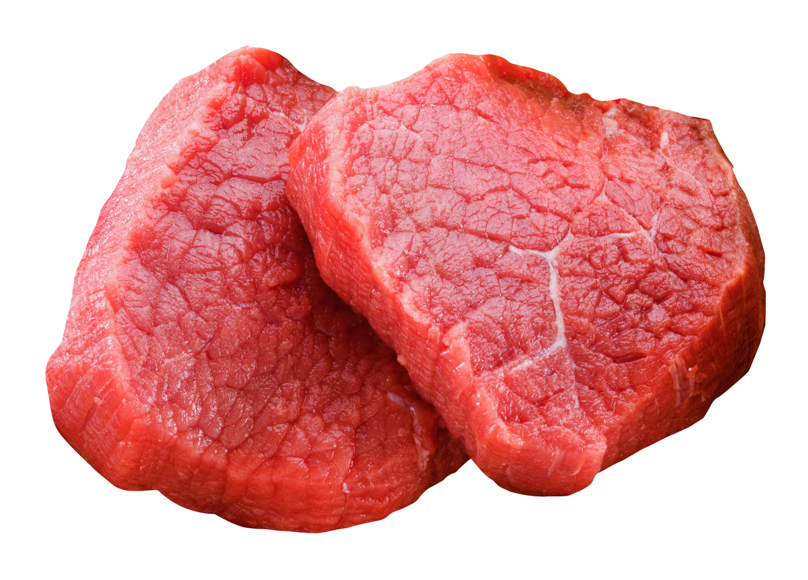

|
Зерновые продукты
|
6-8 |
- 1 кусочек хлеба,
- 30г крупы или сухового завтрака,
- ½ тарелки каши или макарон
|
Хлеб (лучше цельнозерновой), пита, крупы, хлебцы, крекеры и т.п. |
Главные источники энергии и пищевых волокон |
Овощи

|
4-5 |
- 1 тарелка резаных листовых овощей,
- ½ тарелки приготовленных овощей (варка, тушение и т.д.),
- 170 мл овощного сока без сахара
|
Помидоры, картофель, морковь, горошек, кабачки, любая капуста, шпинат, фасоль, и т.д. |
Богатые источники калия, магния и пищевых волокон |
|
Фрукты
|
4-5 |
- 170 мл сока,
- среднего размера фрукт,
- ½ чашки свежих или замороженных фруктов, ¼ чашки сухофруктов
|
Цитрусовые, виноград, бананы, абрикосы, персики, ягоды, финики, соки без добавки сахара |
Богатые источники калия, магния и пищевых волокон |
|
Молочные продукты (Обезжиренные или с низким содержанием жира)
|
2-3 |
- 220-230мл молока,
- 1 чашка йогурта,
- 40-45г сыра
|
Молоко, кисломолочные продукты, творог, сыры - все обезжиренные или низкожирные (1%) |
Богаты кальцием и белками |
|
Постное мясо, птица и рыба

|
< 170гр |
- 80-90гр приготовленного мяса птицы или рыбы
|
Мясо постное, без видимого жира, птица без кожи. Рыба может быть жирной |
Богаты белком и магнием |
Орехи, семечки, сухие фасоль и горох

|
4-5 в неделю |
- 40-45г орехов,
- 2 ст. л. семечек,
- ½ тарелки приготовленной фасоли или гороха
|
Любые орехи, семечки, подсолнечника и тыквы, фасоль, горох |
Богаты энергией, магнием, калием, белками и волокнами |
|
Жиры и масла
|
2-3 |
- 1 ст. л. майонеза,
- 1 ч. л. растительного маса,
- 1 ч. л. спреда,
- 2 ст. л. салатного соуса
|
Спреды(мягкие маргарины), низкожирный майонез, салатные соусы, любые растительные масла |
Источник жирных кислот |
Сладости

|
< 5 в неделю |
- 1 ст. л. сахара,
- 1 ст. л. варенья
|
Сахар, варенье, конфеты зефир, пастила, мороженое |
Сладости должны быть с низким содержанием жира |